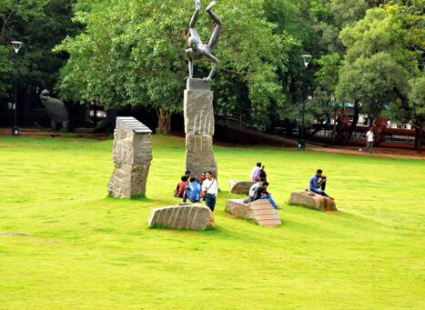
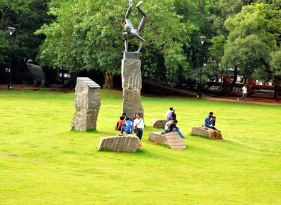

Kakkayam
Its a dam site located in Kozhikode of Kerala state surrounded by lush greenery .The distance is about 15 km from Kakkayam Bus stop. There is a forest office at top . You need to take permission from the official authories before going ahead. Cameras are not allowed near Dam area. 'Orakkuzhi' is a water fall located just after the Dam. Near the dam location , different animals including elephants can be seen.


 
